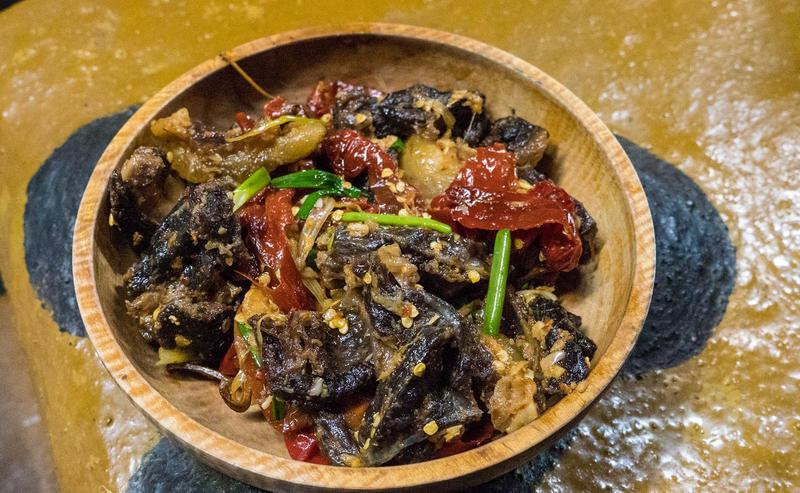

Procedure
- Cut the dried beef into bite-sized pieces and soak them in
warm water.
- Wash and chop the chillies and tomatoes.
- Drain out the water from the soaked dried beef and wash
them two more times.
- Cook the beef in the pressure cooker for about 15
minutes.
- After the beef is cooked, add the chopped chillies,
tomatoes, cheese, salt and oil.
- Cook them for another 5 minutes without the lid of the
pressure cooker.
- After five minutes, turn off the heat.
- Keep the lid closed for another five minutes after which
mix the ingredients by stirring them.
- Your Shakam Datshi is ready to be served.
Ingredients
- Shakam (dried beef)
- Green chillies
- Tomatoes
- Processed cheese
- Local cheese
- Salt
- Oil/Butter